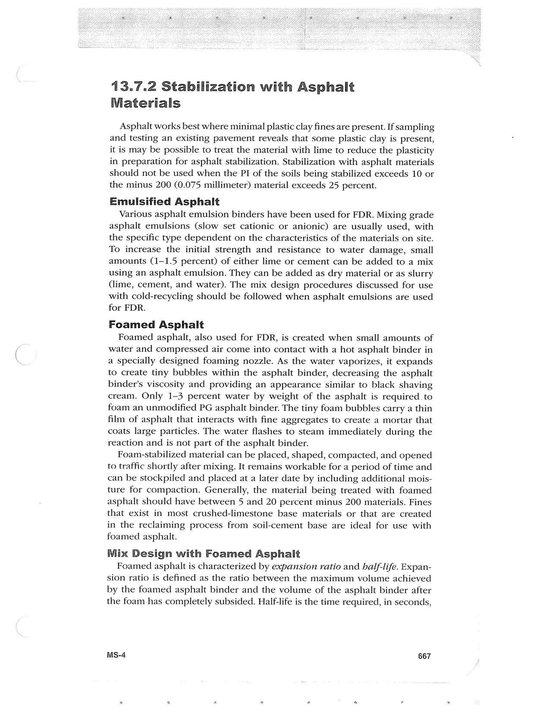

PDF page 701 · book page sequence 667


Searchable transcription
Unproofread OCR · 430 detected words; mean OCR confidence 95.57. Check technical values, symbols and table columns against the scan.
13.7.2 Stabilization with Asphalt Materials
Asphalt works best where minimal plastic clay fines are present. If sampling and testing an existing pavement reveals that some plastic clay is present, it is may be possible to treat the material with lime to reduce the plasticity in preparation for asphalt stabilization. Stabilization with asphalt materials should not be used when the PI of the soils being stabilized exceeds 10 or the minus 200 (0.075 millimeter) material exceeds 25 percent.
Emulsified Asphalt
Various asphalt emulsion binders have been used for FDR. Mixing grade asphalt emulsions (slow set cationic or anionic) are usually used, with the specific type dependent on the characteristics of the materials on site. To increase the initial strength and resistance to water damage, small amounts (1-1.5 percent) of either lime or cement can be added to a mix using an asphalt emulsion. They can be added as dry material or as slurry (lime, cement, and water). The mix design procedures discussed for use with cold-recycling should be followed when asphalt emulsions are used for FDR.
Foamed Asphalt
Foamed asphalt, also used for FDR, is created when small amounts of water and compressed air come into contact with a hot asphalt binder in a specially designed foaming nozzle. As the water vaporizes, it expands to create tiny bubbles within the asphalt binder, decreasing the asphalt binder’s viscosity and providing an appearance similar to black shaving cream. Only 1-3 percent water by weight of the asphalt is required. to foam an unmodified PG asphalt binder. The tiny foam bubbles carry a thin film of asphalt that interacts with fine aggregates to create a mortar that coats large particles. The water flashes to steam immediately during the reaction and is not part of the asphalt binder.
Foam-stabilized material can be placed, shaped, compacted, and opened to traffic shortly after mixing. It remains workable for a period of time and can be stockpiled and placed at a later date by including additional mois- ture for compaction. Generally, the material being treated with foamed asphalt should have between 5 and 20 percent minus 200 materials. Fines that exist in most crushed-limestone base materials or that are created in the reclaiming process from soil-cement base are ideal for use with foamed asphalt.
Mix Design with Foamed Asphalt
Foamed asphalt is characterized by expansion ratio and half-life. Expan- sion ratio is defined as the ratio between the maximum volume achieved by the foamed asphalt binder and the volume of the asphalt binder after the foam has completely subsided. Half-life is the time required, in seconds,
MS-4 667